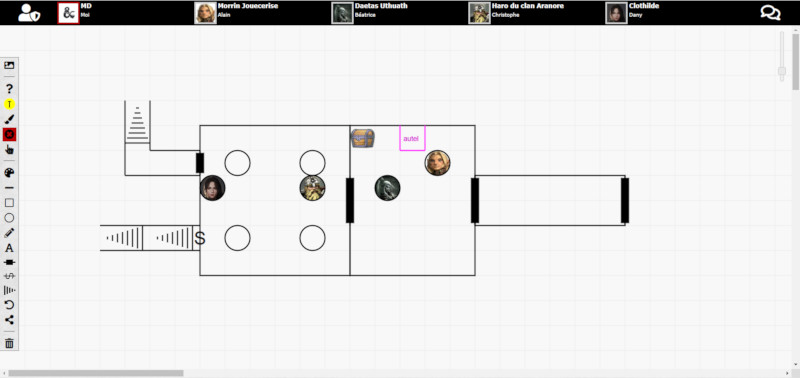
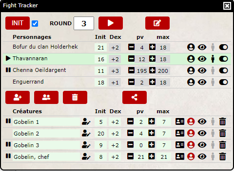
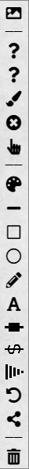

Guide d'utilisation d'Online Assistant
Voici en détails les fonctionnalités proposées par Online Assistant.

Pour tous
Le groupe
Avatar. Il est recommandé d'utiliser des images de 100x100 pixels (comme celles des feuilles de personnages en ligne) et l'url de l'image doit obligatoirement se terminer par ".jpg" ou ".png". Le bandeau supérieur indique les participants du groupe (nom du joueur et nom du personnage). Un cadre rouge indique les joueurs qui se sont connectés il y a moins de 8 heures.
Il est également recommandé, mais pas obligatoire, d'utiliser les feuilles de personnages en ligne issues du Character Builder d'AideDD. Dans ce cas, si le MD a bien saisi l'ID dans son espace de configuration, cliquer sur son avatar ouvre automatiquement sa feuille de personnage. N'oubliez pas que le joueur peut indiquer sur sa feuille de personnage le pseudo de son MD sur le forum pour que ce dernier puisse y avoir accès en lecture.
Cliquer sur n'importe quel autre avatar permet d'envoyer un message privé via le chat.
Chat . Masque ou affiche le chat sur la droite.
Les outils
À droite de d'écran, au-dessus du chat, se trouvent quelques icônes.
HÉBERGEMENT DES IMAGES
L'application vous permet d'uploader une image de votre ordinateur sur le serveur d'AideDD, mais il peut être plus rapide d'utiliser un hébergeur d'images comme Pinterest par exemple pour stocker plusieurs images à l'avance. Vous n'aurez ainsi qu'à partager le lien des images au fur et à mesure.
Les liens Google Drive ne semblent plus accessibles par contre.
Image . Ouvre ou ferme une nouvelle fenêtre qui vous permet de partager en live une image avec tous les participants du groupe. Entrez l'url de l'image ou téléchargez une image de votre ordinateur sur le serveur via , puis cliquez sur .
Notes . Ouvre ou ferme une nouvelle fenêtre qui vous permet de prendre des notes tout au long de la partie. Cliquer sur stocke les notes sur le serveur pour pouvoir les récupérer plus tard dans le cas d'une partie échelonnée sur plusieurs séances.
Étiquettes . Affiche ou masque le nom et la barre de points de vie de tous les pions du Fight Tracker visibles sur la battlemap.
Règles . Ouvre un nouvel onglet de votre navigateur sur la page des Règles de D&D 5 d'AideDD.
Aide . Affiche le guide d'utilisation d'Online Assistant de cette page.
Le chat
Le chat à droite de l'écran permet d'échanger des messages de textes et les jets de dés entre tous les participants. Notez bien que ce chat n'est pas prévu pour être le média principal de communication entre les joueurs. Online Assistant n'est qu'un complément à un chat vocal ou vidéo.
Messages. Tapez tout simplement votre texte dans la ligne prévue à cet effet et "Enter" pour envoyer le message à tous les participants.
Messages privés. Si vous commencez votre message par "@" suivi immédiatement du nom d'un joueur, seul vous, le destinataire et le MD pourront voir le message.
Messages préformatés. Plusieurs boutons permettent d'envoyer des messages préformatés sur le chat, afin d'éviter d'avoir à taper trop de texte (Jet d'initiative, Jet d'attaque, Jet de dégâts, etc)
Messages d'information. Plusieurs messages généraux peuvent apparaître sur le chat, comme par exemple pour indiquer à qui est venu le tour de jouer.
Jets de dés. Tous les jets de dés de D&D 5, dont le d20 avec avantage (A) ou désavantage (D), sont accessibles en un seul click. Vous pouvez bien entendu combiner les messages privés et les jets de dés.
Jets de dés (formules). Si vous souhaitez lancer plusieurs dés ou bien ajouter un bonus/malus à un jet, vous pouvez entrer une formule dans le chat avec un format intuitif. Commencez votre message par "&" puis tapez la formule sous la forme « NdX+B », où N est le nombre de dés, X le type de dé et B le bonus. Exemples :
- &d10
- &d20A
- &2d8+4
- &2d6+4d8+6
Jets de dés (formules configurables) . Chaque joueur utilise généralement certains jets plus souvent que d'autres. Par exemple le d20 d'attaque de son personnage avec le bonus adéquat, ou bien encore le jet de dégâts de ses armes favorites. En cliquant sur ce bouton, puis en entrant la formule du jet, vous pouvez configurer jusqu'à 5 jets différents. Ces formules sont sauvegardées.
La battlemap
Online Assistant étant destiné à D&D 5, un jeu où le combat est important, la battlemap tient une place prépondérante et occupe la majeure partie de l'écran.
Zoom. Une barre verticale (slider) dans le coin en haut à droite de la battlemap permet d'ajuster le zoom.
Pour les joueurs
Les outils
Pointeur . Permet d'indiquer en live un point sur la carte au MD et aux autres joueurs. Notez que la carte des joueurs n'est pas déplacée, donc il se peut que le point signalé soit hors de vision pour certains.
Points de vie . En tant que joueur, vous pouvez gérer vos points de vie (pv actuels et pv max) au cours d'un combat. Actualisez vos points de vie et cliquez sur ce bouton. Cela actualisera automatiquement la barre de points de vie de votre jeton sur la battlemap et le Fight Tracker du MD.
Initiative . Vous pouvez également gérer votre initiative (valeur d’initiative et modificateur de Dextérité). Une fois le dé 20 lancé avec le bonus adéquat, actualisez votre valeur d'initiative et cliquez sur ce bouton. Cela actualisera automatiquement le Fight Tracker du MD.
La battlemap
Le MD peut vous envoyer la représentation de la scène qu'il a dessiné de son côté, sur un plan quadrillé. En tant que joueur vous ne pouvez bouger que votre pion avec un simple Drag & Drop.
Pour le MD
Les outils
Une case à cocher permet de définir si les jets de dés du MD, y compris ceux effectués depuis les fiches des créatures, sont privés ou publics.
Le Fight Tracker
En tant que MD, cliquer sur en haut à gauche ouvre le Fight Tracker pour vous assister durant les combats.
Initiative. Le bouton « INIT » jette le dé d'initiative de toutes les créatures que vous avez ajoutées pour le combat, en prenant en compte le bonus de Dextérité de chacune d'elles, et réinitialise le compteur de rounds à 1.
Une case à cocher à côté du bouton « INIT » permet d'indiquer si l'application doit automatiquement lancer l'initiative pour les PJ. Dans le cas contraire, chaque joueur lancera son dé et partagera automatiquement son résultat avec le MD.
Gestion des tours . À chaque click sur ce bouton, l'application indique visuellement qui doit jouer en fonction de l'initiative de chacun. Les données dynamiques (init et pv) sont également sauvegardées à ce moment-là. À la fin de chaque round, le compteur est actualisé automatiquement.
Édition des données des PJ . Par défaut chaque joueur gère personnellement ses points de vie et son initiative, et cela actualise automatiquement le Fight Tracker du MD. Cependant, dans certains cas, le MD peut souhaiter vouloir modifier lui-même ces données. Ce bouton lui permet d'y accéder.
ouvre dans un autre onglet la feuille de personnage en ligne de ce PJ, si son ID a bien été préalablement renseigné par le MD.
permet de changer l'avatar du PJ en fonction de sa taille.
permet de rendre invisible ou visible aux autres joueurs le pion de ce PJ sur la battlemap.
permet d'indiquer une ou des conditions pour le PJ (à terre, paralysé, etc).
permet d'indiquer si un PJ ne prend pas part au combat, afin de l'inclure ou non dans le round.
Ajouter une créature . Après avoir cliqué sur cet icône, entrer le nom d'une créature dans la case grise, où est définit son type. L'application propose une liste en fonction du texte entré et du contenu de la base de données des créatures d'AideDD. Ses points de vie et son bonus de Dextérité pour l'initiative sont alors automatiquement indiqués. Le nom qui apparaît ensuite sur la case verte est le nom du pion qui apparaîtra sur la battlemap. Vous pouvez le modifier à convenance.
affiche automatiquement le bloc de stat de la créature (et de là, la fiche des sorts de la créature le cas échéant). Cliquer sur le symbole des dés de la fiche lance automatiquement les dés (attaque ou dégâts) avec les bonus adéquats.
permet de sélectionner l'image du pion en fonction de la taille de la créature. L'icône est en rouge si l'avatar est celui par défaut.
permet de rendre invisible ou visible aux joueurs le pion de cette créature sur la battlemap.
permet d'indiquer une ou des conditions pour la créature (à terre, paralysé, etc).
élimine la créature du Fight Tracker et de la battlemap.
Copier la dernière créature . Quand vous avez tout un groupe de créatures du même type à ajouter au Fight Tracker, configurez bien la première puis cliquez sur ce bouton. Cela recopie la dernière créature ajoutée et les numérote automatiquement.
Effacer toutes les créatures . Élimine toutes les créatures du Fight Tracker et de la battlemap.
Placer les pions sur la carte . Place les pions de toutes les créatures du Fight Tracker sur la battlemap en prenant en compte leur taille. C'est également à ce moment que les créatures du Fight Tracker sont sauvegardées. Le MD peut ensuite bouger chaque pion avec un simple Drag & Drop.
La battlemap
FORMATER UNE BATTLEMAP
N'importe quel logiciel gratuit de retouche d'image (comme Paint de Windows ou GIMP) permet facilement de formater une image de battlemap pour Online Assistant afin d'avoir des cases de 50x50 pixels.
1. Rogner l'image afin que le coin en haut à gauche corresponde au coin de votre première case.
2. Compter le nombre de cases que comporte votre image sur sa largeur.
3. Redimensionner l'image en spécifiant pour sa largeur en pixels le nombre de cases x 50.
En tant que MD, vous avez accès à plusieurs outils simples pour dessiner votre carte. Le MD dessinera en live, comme il le ferait sur un tableau blanc, en fonction de la progression des personnages. Le parti pris d'Online Assistant est en effet d'éviter au MD d'avoir à préparer trop de choses à l'avance et de privilégier le live. Mais si vous le souhaitez, vous pouvez également charger une image (retouchée et préparée à l'avance avec GIMP par exemple) ou reprendre une des battlemaps formatées pour l'OA sur AideDD (voir ici et là).
Image de fond . Entrez l'url d'une image ou téléchargez une image de votre ordinateur sur le serveur via . Les cases doivent être de 50x50 pixels. Vous pouvez n'afficher l'image que pour vous le temps de placer d'éventuels masques en cliquant sur . Puis lorsque vous êtes prêt, partagez l'image en cliquant sur .

Décors . Sélectionne un élément de décor (objet ou PNJ sans bloc de stat qui n’apparaît pas sur le Fight Tracker).
Masques . Sélectionne un type de masque (cache noir opaque ou zones de couleur transparentes) et sa taille (1x1, 3x3 ou 5x5 cases).
Placer (décor ou masque) . Permet ensuite de cliquer directement sur la battlemap pour y ajouter l'élément de décor ou le masque sélectionné ci-dessus. Vous pouvez enchaîner les placements avec la touche SHIFT.
Effacer (décor ou masque) . Permet ensuite de cliquer directement sur un élément de décor ou un masque pour l'éliminer.
Pointeur . Permet d'indiquer en live un point sur la carte aux joueurs. Notez que la carte des joueurs n'est pas déplacée, donc il se peut que le point signalé soit hors de vision pour certains joueurs.
Couleur et Trait . Permet de choisir la couleur des motifs et le style du trait (voir ci-dessous).
Dessin. L'application permet de dessiner plusieurs motifs simples :
Ligne. Le premier click sur une intersection définit le point de départ (A), le deuxième le point d'arrivée (B). Si vous maintenez la touche SHIFT de votre clavier enfoncée, le prochain click sera pris comme le prochain point d'arrivée depuis le point (B).
Rectangle. Le premier click sur une intersection définit le premier coin, le deuxième le coin opposé.
Cercle. Le premier click, sur une case ou une intersection, définit le centre du cercle. Le deuxième click définit le rayon du cercle (diamètre minimum de 1 case).
Main levée. Dessiner à main levée, sans contrainte de la grille.
Texte. Permet d'ajouter une note écrite sur le plan.
Porte. Le premier click sur une intersection définit le point de départ, le deuxième le point d'arrivée. Notez que la porte peut faire plus d'une case de long. Vous pouvez enchaîner les portes avec la touche SHIFT comme pour les lignes (voir ci-dessus).
Porte secrète. Identique au dessin d'une porte normale mais pour tracer le symbole d'une porte secrète (une fois que les personnages l'auront trouvée bien entendu). La largeur est fixée à une seule case.
Escalier. Le premier click sur une case définit le haut de l'escalier, le deuxième le bas de l'escalier. La longueur est fixée à deux cases.
Undo . Ce bouton efface le ou les derniers motifs dessinés.
Partager le dessin . Dessinez la carte avec l'aide des motifs, ajoutez, effacez, etc. Quand vous avez obtenu le résultat souhaité, cliquez sur cet icône pour envoyer le dessin sur la battlemap de chaque joueur.
Maintenance
Considérez que chaque partie possède 3 bases de données.
- La première base de données contient les PJ (avatar, initiative, points de vie, etc). Le MD ne peut pas l'effacer depuis l'OA, mais il peut par contre modifier la composition de son groupe depuis son interface de configuration.
- La deuxième base contient les créatures ajoutées au Fight Tracker. Le bouton sur le Fight Tracker permet au MD d'effacer cette base quand il le souhaite.
- La troisième base contient tout le reste, tout ce qui est échangé entre les joueurs : les messages, les jets de dés, les dessins, les battlemaps, les mouvements des jetons, etc. Le bouton en bas de la barre d'outils du MD à gauche permet d'effacer cette base.
Chaque MD devra régulièrement (à la fin de chaque combat ou de chaque session par exemple) effacer ces bases s'il ne veut pas ralentir inutilement le chargement des pages.